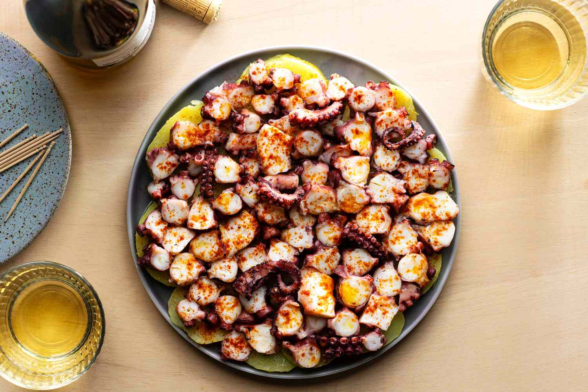

Pulpo a la Gallega

Description
When I think of Spanish gastronomy, pulpo a la gallega always holds a
special place in my heart. This dish, originating from the beautiful
region of Galicia, is more than just food; it’s a representation of the
Spanish way of life—sharing simple, high-quality ingredients with loved
ones, enjoying every bite, and creating memories around the table.
As a chef, there’s something magical about preparing this dish. I remember
growing up and watching my grandmother, with the wisdom passed down
through generations, effortlessly boiling the octopus and seasoning it
with love. Pulpo a la gallega is a dish that brings people together, and
today, I want to share with you how to create this Spanish classic at
home. It’s surprisingly easy to make, and once you try it, I’m sure you’ll
feel the same sense of warmth and connection I do every time I serve it to
loved ones. So, gather around your kitchen and get ready to bring a taste
of Galicia into your home.
Ingredients
- 1 octopus
- 1 kg of potatoes
- 1 tablespoon of sweet paprika
- 1 tablespoon of hot paprika
- Coarse sea salt
- 4 tablespoons of extra virgin olive oil
- 2 bay leaves
- Water
Steps
-
Preparing the Octopus: Before cooking the octopus, it’s important to
tenderize it to avoid a rubbery texture. If you have a fresh octopus,
freeze it for a day or two before cooking, as this helps break down the
muscle fibers. If you're using a pre-frozen octopus, you can skip this
step. Thaw the octopus if it was frozen, ensuring it is fully defrosted.
Fill a large pot with water, adding the bay leaves for extra flavor.
Bring the water to a boil. Once boiling, grab the octopus by the head
and dip it into the water three times before leaving it in to cook. This
"scaring" technique helps curl the tentacles, giving the octopus that
classic pulpo appearance. Boil the octopus for about 45-50 minutes,
depending on its size. You’ll know it’s ready when you can easily insert
a fork into the thickest part of the tentacles.
-
Preparing the Potatoes: While the octopus is cooking, it’s time to
prepare the potatoes. Pulpo a la gallega is traditionally served with
sliced potatoes, which soak up the olive oil and paprika beautifully.
Peel the potatoes and slice them into rounds, about 1 cm (0.4 inches)
thick. Once the octopus has been cooking for about 35 minutes, add the
potato slices into the same pot and let them cook alongside the octopus
for the remaining 10-15 minutes. This allows the potatoes to absorb some
of the octopus-flavored water, adding depth to their taste.
-
Assembling the Dish: Now that the octopus and potatoes are perfectly
cooked, it’s time to assemble the dish. Remove the octopus from the pot
and let it rest for a few minutes. Using kitchen scissors or a sharp
knife, cut the tentacles into 1 cm thick slices. Arrange the potato
slices on a serving platter or individual plates, forming a base layer.
Place the octopus slices on top of the potatoes.
-
Seasoning the Pulpo a la Gallega: The seasoning is what elevates pulpo a
la gallega from good to extraordinary. Drizzle the extra virgin olive
oil generously over the octopus and potatoes. Sprinkle the sweet paprika
evenly across the dish. If you prefer a bit of heat, you can add some
hot paprika as well. Finish with a pinch of coarse sea salt, adding a
burst of flavor to each bite.
-
Serving and Enjoying: Serve your pulpo a la gallega immediately, while
it’s still warm. This dish is best enjoyed with a group, accompanied by
a good Galician white wine like Albariño. As you dig into the tender
octopus and the perfectly seasoned potatoes, you’ll experience the true
taste of Spain’s rich culinary heritage. Enjoy your homemade pulpo a la
gallega!